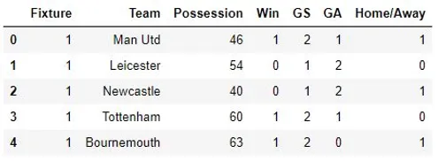
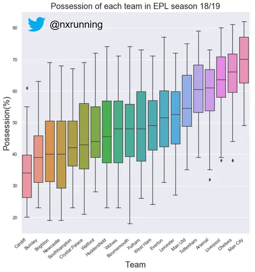
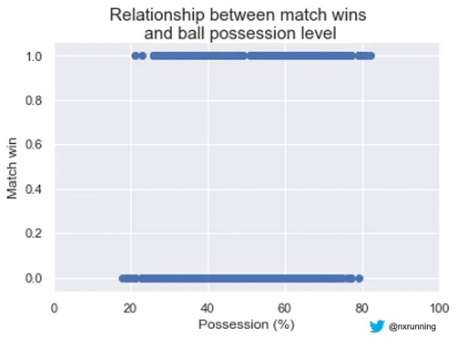
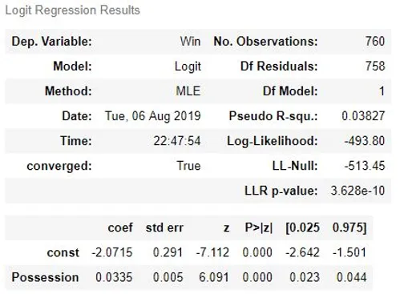
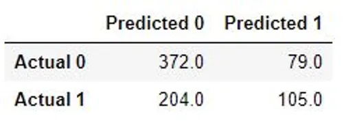

Ball possession is an important performance indicator in football. This article explores the use of logistic regression model to examine a binary classification problem: whether ball possession predicts match win or not.

Ball possession in football is seen as an imperative aspect of the game. Many successful teams are often characterised by dominating long periods of possession. The first team that sprints to your mind with such nature of play is likely the Spanish giants, Barcelona. They are often defined by their “tiki-taka” style of play, which constitutes short passing and movement to maintain possession.
Past research have claimed that possession is a critical performance indicator that can differentiate successful teams. Better performing teams tend to maintain significantly longer possession as compared to the less successful teams. In the context of football, it does not matter if you can possess the ball for extended periods but failing to win the match. This leads to an important question, can possession predict wins in football?
In view of the imminent English Premier League (EPL) season, let’s revisit last EPL season’s data to answer this question! The data set consists of all results from the total 380 matches played throughout the season. Each row represents the match statistics of a team in a given match. You may see a preview of the data below.

Do better teams have greater possession?
As mentioned above, it has been claimed that ball possession is a performance indicator that can distinguish the more successful teams. Firstly, let’s visualise the possession of each team ranked by their ball possession!

No surprise that the EPL champions, Manchester City, with the most points tallied also had the most dominating ball possession among all the teams. From the graph, we can see that there is some truth to the claim, with the “top six” teams all ahead in the ball possession rankings as compared to the rest of the league. The highest ball possession recorded was a whopping 82% by Manchester City during match day 29 away to Bournemouth. However, the score did not truly reflect such one-sided dominance, with City edging Bournemouth by just a goal.

Does ball possession translate into results?
In the data visualization above, we can see that all results are classified into either wins or otherwise (draw or loss). With so much emphasis on ball possession in today’s football, this scatter plot seems to tell us otherwise, with no clear threshold of possession level that guarantees a win. We can see that a winning team can have close to 20% of possession while a non-winning team can have close to 80% of possession. For example, Crystal Palace pulled off a surprising win (3-2) against Manchester City at the Etihad Stadium on match day 18, with only 21% of ball possession during the match. Therefore, is ball possession a reliable predictor of match wins?
Logistic Regression
This is a classification problem, as we use possession as an independent variable to predict the match result. The problem is simplified to be a binary classification scenario, whereby the result can only have two outcomes: either win or otherwise (i.e. draw or loss). Since the dependent variable is categorical in nature, logistic regression is employed to help us answer our question. In this example, we make use of the StatsModel module, which is an open-sourced Python module encompassing several statistical functions. You may see the summary of the logistic regressions result below.

The results showed that ball possession is a significant predictor of match wins. This suggests that possession is indeed a meaningful indicator of a match outcome. The coefficient of the possession variable is 0.0335, and this implies that when ball possession level increases by 1%, the odds of winning the match increase by 3.41%. Greater ball possession could translate to more creation of goal-scoring opportunities. Possessing the ball more also means reducing opponent’s chances of scoring since a team will need to have the ball first before they can even try to score. Such situations could contribute to a greater likelihood of winning the match.
How accurate is this model?
In this example, the logistic regression model was trained with the data from all matches in EPL season 18/19. We could deploy the model to predict a match outcome given an input amount of possession levels. The model predicts by calculating the probability of either outcomes (value between 0 and 1). In this example, if a given possession level has a probability of winning greater than 0.5, it will be predicted that the team wins the match and vice versa.
In the field of machine learning and data science, the accuracy rate of a classification model can often be interpreted through a confusion matrix. A confusion matrix is a simple table that shows the accuracy of the model by comparing the predicted values with the actual values in the data set. You may see the confusion matrix for this example below.

The confusion matrix compares all 760 predicted outcomes with the actual recorded outcomes. From the matrix, we can see that 372 cases were correctly predicted to be non-wins, also termed the true negatives. 204 cases were incorrectly predicted to be non-wins when they actually produced match wins in reality. Such cases are termed false negatives. 79 cases were also incorrectly predicted to be winning outcomes when they were actually non-wins, also known as the false positives. Lastly, 105 cases were correctly predicted to be classified as match wins, which are regarded as the true positives.
Accuracy rate = (372+105)/760 * 100
This model was found to be 62.76% accurate! I will leave it to your personal judgement whether this model is acceptable. Obviously, football is a game with so many variables that can influence the outcome of a match. Therefore, it is not surprising to expect such accuracy of a simple model with a single predictor variable. Nevertheless, this post showcases that ball possession is a significant variable that can help us predict match outcomes. However, possession itself does not tell the full story.